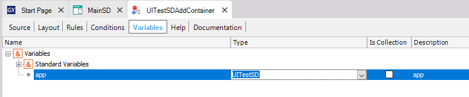
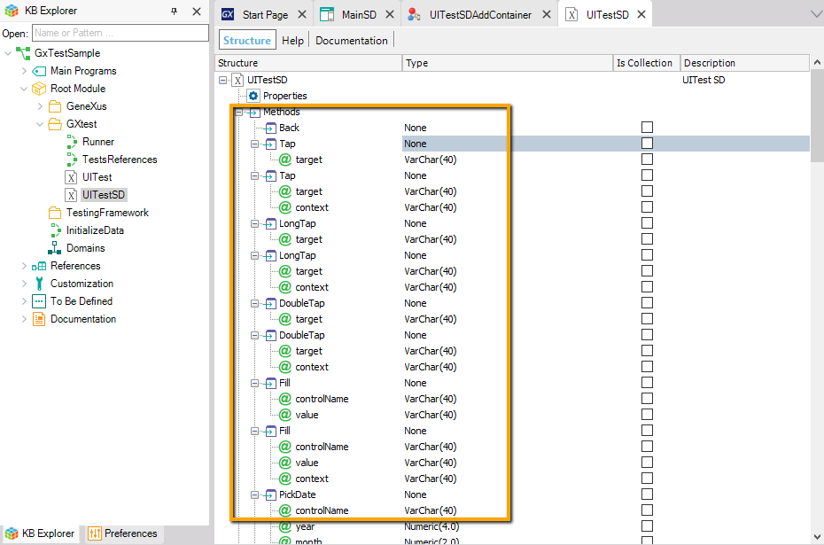
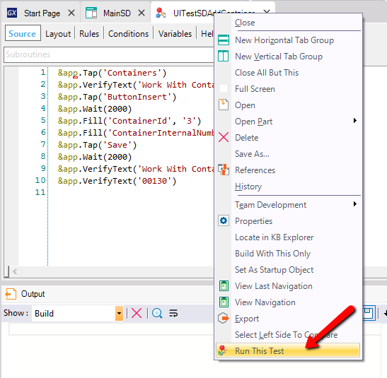
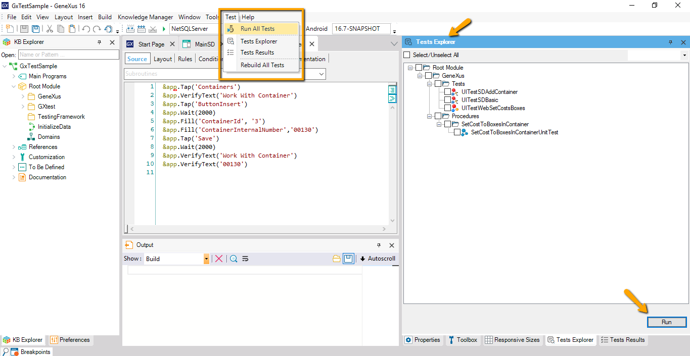

Introduction to automation with UI Tests
UI testing is available using native GeneXus programming, through a specific object in the GeneXus IDE called UI Test object.
For example:
Consider the following UI Test object:

The variable named &app is autogenerated and provides automation capabilities over the target device. It is based on the UITestSD External Object.

The UITestSD external object is responsible for implementing the adaptation layer over the device. It has several methods for actions and verifications to be made in the UI Test.

The following property must be set in order to build and run this type of objects:
- Test Target property of the UI Test object. It indicates the main object of the application to be tested. In the example: "MainSD"
Build & Run the UI Test

Or

Note:
For running UI tests on Apple platforms you need to install the library xcpretty.
Sample
| Backlinks | ||
| Toc:Automated Testing | ||
| GXtest v4 Licensing | GXtest v4 Licensing (GeneXus 17 upgrade 4 or prior) | GXtest v4 Licensing (GeneXus 17 upgrade 5) |
| Category:UI Test object |